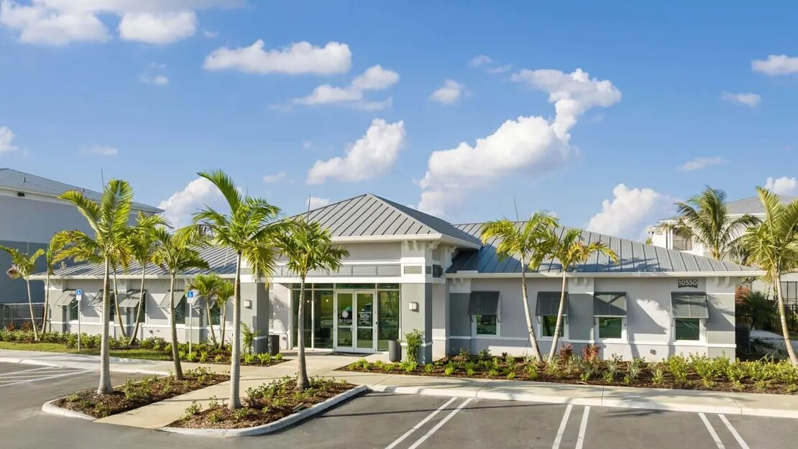

The Project
Lucie at Tradition is a multifamily community in Port St. Lucie, FL - inside the Tradition master plan, one of the fastest-growing communities on Florida's Treasure Coast. The clubhouse is the first thing residents and prospects see. It sets the tone for the entire property.
The building features a coastal architectural style - white stucco, standing seam metal roof, palm-lined entrance. The storefront glass entrance is the focal point. It had to look clean, let in natural light, and meet Florida's impact requirements.
Why Clubhouse Glazing Matters
In multifamily, the clubhouse is the sales office. Prospective residents walk through the front door and decide if this is where they want to live. The glass entrance is doing work before anyone says a word.
That means the storefront can't look like an afterthought. The framing has to be tight. The glass has to be clean and bright. The doors have to operate smoothly. And in Florida, everything has to be impact-rated - because shuttering a community amenity building before every hurricane warning isn't realistic.
The Scope
ACG delivered the complete storefront glazing package - ESWindows storefront framing, impact-rated insulated glass, entrance doors, and all associated windows throughout the clubhouse. The address is 10550 SW Tradition Pkwy.
ESWindows was the right product for this project. Their storefront system delivers clean sightlines, proven impact performance for the Treasure Coast wind zone, and the kind of finish quality that holds up to daily use in a high-traffic amenity building.
What Makes Multifamily Clubhouse Glazing Different
Clubhouse glazing is different from a typical commercial storefront in a few ways:
- Design-driven specs. The architect cares about sightlines and framing profiles. This isn't a strip mall - the glass is the architecture.
- High-traffic entrance. Residents, guests, delivery drivers, maintenance staff. The entrance doors need commercial-grade hardware that lasts.
- Tight schedule coordination. The clubhouse often opens before the last residential buildings are done. The glazing can't be the reason the sales office misses its opening date.
- Impact requirements. Every opening needs to meet Florida's hurricane impact code. No exceptions.
Treasure Coast Multifamily Market
Port St. Lucie is one of the fastest-growing metros in the country. The Tradition master plan alone has thousands of homes, multiple retail centers, and a growing commercial base. That means more clubhouses, more amenity buildings, and more multifamily glazing work coming to the Treasure Coast every year.
ACG's headquarters in West Palm Beach is 50 miles south - putting Port St. Lucie within direct reach. We've completed multiple projects in the Tradition community, including the Baron Shoppes of Tradition retail center.
View the Full Case Study
See all the project details, photos, and scope breakdown on the Lucie at Tradition case study page.
Frequently Asked Questions
What kind of glass is used in multifamily clubhouses in Florida?
Most multifamily clubhouses use impact-rated storefront systems with insulated glass units (IGUs). Manufacturers like ESWindows produce framing and glass packages designed for Florida's wind and debris codes. The storefront framing is typically aluminum, and the glass is laminated with a PVB interlayer for impact resistance.
How long does clubhouse glazing take to install?
Installation typically takes 2-4 weeks depending on the number of openings. The full timeline from submittals to closeout is usually 10-14 weeks including fabrication lead times. ACG turns around scopes in 48 hours and manages the full timeline from order to punch list.
Does a clubhouse need hurricane impact glass in Florida?
Yes. Any commercial building in Florida's wind-borne debris region requires impact-rated glazing. Most developers choose impact glass over shutters for clubhouses because shuttering a community building before every storm warning is impractical and disrupts resident access to amenities.